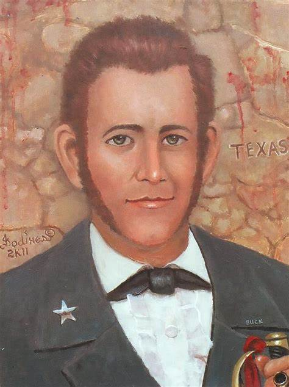

Instituto Técnico Honduras

William Barret Travis

William Barret Travis (9 de agosto de 1809 - 6 de marzo de 1836) fue un abogado estadounidense y militar durante el siglo XIX. A los 26 fue teniente coronel en la organización Ejército tejano comandando las fuerzas de la República de Texas. Falleció en la batalla del Álamo durante la revolución texana en la República de México.
Había nacido en Saluda County, Carolina del Sur, de Mark y de Travis Jemima en 1809; los registros difieren en cuanto a si su fecha de nacimiento fue el primero o el noveno del mes de agosto, pero la Biblia de la familia Travis indica que nació en el noveno. A la edad de nueve años, se trasladó con su familia a la ciudad de Esparta en Conecuh County, Alabama, donde recibió gran parte de su educación. Más tarde, se matriculó en una escuela en la cercana Claiborne, donde finalmente trabajó como ayudante de maestro. Travis se convirtió en un abogado y, a los 19 años, se casó con una de sus antiguas alumnas, de 16 años, Rosanna Cato (1812-1848), el 26 de octubre de 1828. La pareja se quedó en Claiborne y tuvieron un hijo, Charles Edward, en 1829. Travis comenzó la publicación de un periódico de ese mismo año, la Claiborne Herald. Se convirtió en masón, uniéndose a la de Alabama Lodge N º 3 - Libres y Aceptados Masones, y más tarde se unió a la milicia de Alabama como ayudante de la Vigesimosexta Regimiento, Octava Brigada, Cuarta División. Por razones que se desconocen, Travis se trasladó a Texas a principios de 1831 para empezar de nuevo, dejando atrás a su esposa, hijo, hija y aún no nacidos. Travis y Rosanna se divorciaron oficialmente por los tribunales del Condado de Marion, el 9 de enero de 1836 por la Ley n.º 115. Su hijo fue colocado con el amigo de Travis, David Ayres, de manera que estaría más cerca de su padre.
Rosanna se casa con Samuel G. Cloud en Monroeville, Alabama, el 14 de febrero de 1836; posteriormente se casó con David Y. Portis en 1843 en Texas (que ambos murieron de fiebre amarilla en 1848). Texas En mayo de 1831, a su llegada a México de Texas, una parte del norte de México en el momento, Travis compra tierras de Stephen F. Austin y comenzó una ley en la práctica Anáhuac. Desempeñó un papel en la creciente fricción entre los colonos americanos y el gobierno mexicano y fue uno de los líderes de la "Parte de guerra", un grupo de militantes se opusieron a la norma mexicana. Se convirtió en una figura fundamental en la Anáhuac de disturbios, lo que contribuyó a precipitar la guerra. La Revolución de Texas comenzó en octubre de 1835 en la Batalla de González. Travis tomó una pequeña parte en el asedio de Bexar, en noviembre. El 19 de diciembre, Travis fue comisionado como teniente coronel de la Legión de Caballería y se convirtió en el jefe oficial de reclutamiento para el ejército tejano. Esta fuerza estaba compuesta de 384 hombres y oficiales, divididos en seis empresas. A pesar de su rango, Travis tiene ahora a reclutar activamente a los hombres que iban a servir bajo su mando, y tenía dificultades para encontrar los colonos dispuestos a alistarse. "Los voluntarios ya no pueden ser invocados ...," escribió al gobernador Henry Smith.